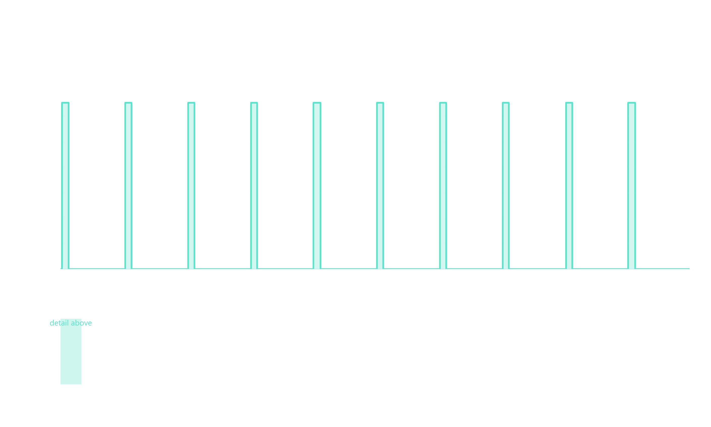
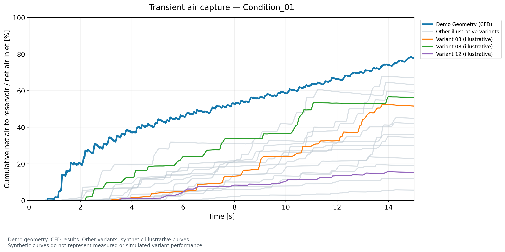
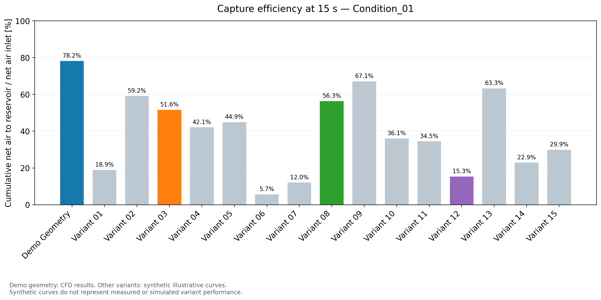

Discovery → mesh
Locate the generic CAD by extension; apply configurable surface sizing, three prism layers and poly-hexcore volume meshing.
Inspect meshing driver ↗MULTIPHASE FLOW / GENERIC DEMONSTRATOR
A compact debubbler makes an engineering trade-off visible: liquid advection carries air downstream; buoyancy can route it toward a reservoir if the geometry gives it time.
Alberto Brambila, PhD
Multiphase modeling · Net-flux analysis
CAD-to-mesh and solver-setup automation
Code, geometry & technical context ↗
01 / DEFINE THE PHYSICAL QUESTION
A visible bubble is only part of the story. The useful question is how much incoming air is directed toward the reservoir, over a defined time window and operating condition.
Transient VOF follows the phase interface. Gravity drives buoyant motion; surface tension shapes the interface as air moves through the junction and interacts with the upper liquid surface. The setup uses k–ω SST and water-like liquid properties.
The pressure inlet and prescribed liquid outlet correspond to a nominal 8 L/min condition. A secondary outlet is capped. These boundary choices define what this particular demonstration can establish.
The inlet air volume fraction pulses between zero and 0.2 at 20 Hz, with a 10% duty cycle. A common forcing history lets the analyst relate delayed reservoir transport to repeated air ingestion.
For another design, bubble forcing, phase properties and boundary conditions must be chosen for its own operating envelope.

02 / CONNECT MOTION WITH A MEASUREMENT
The demo reaches 78.2% cumulative net air routing to the reservoir plane at 15 s. This is a sensor-defined CFD transport ratio for the displayed demonstration, not measured external removal efficiency.

The calculation integrates the signed air mass flow at the reservoir plane and divides by integrated inlet air mass over the same 0–15 s window. The reservoir signal is reversed to match the chosen positive transport direction.
η(T) = 100 × M_air,reservoir(T) / M_air,inlet(T)
The reservoir sensor is an internal plane. The saved boundary assignments restrict air exit, so this ratio describes net internal routing rather than proving permanent capture or zero downstream carryover.
The supplied history independently gives 4.8661 × 10−5 kg of net injected air and 3.8064 × 10−5 kg routed across the reservoir plane.

Engineering decision: use the transient history to understand transport delays, then assess pressure loss, carryover, conservation and numerical sensitivity before choosing a design. The demo does not establish a validated optimum.
03 / MAKE THE WORKFLOW REUSABLE
The automation work addresses a practical CFD failure mode: a regenerated mesh can acquire boundary types and IDs that differ from those used to define the solver model.
Locate the generic CAD by extension; apply configurable surface sizing, three prism layers and poly-hexcore volume meshing.
Inspect meshing driver ↗Read the local reference case, replace the mesh by zone name and retain boundary types, expressions, reports and surfaces.
Inspect setup driver ↗Integrate oriented phase fluxes over the same time interval; connect the calculated quantity to the physical question.
Inspect metric calculation ↗The public repository includes Discovery CAD, the meshing workflow, Python drivers and a sanitized .set reference. Meshes and solver cases remain local. The setup builder therefore documents a reusable implementation with explicit local prerequisites; it is not a one-command public reproduction.
WHAT THIS EXPERIENCE BRINGS TO YOUR TEAM
The same skills support cooling loops, filling operations, phase separators and other internal-flow systems. The model assumptions and validation plan must follow the new application.
Translate air ingestion, gravity and interfacial physics into a tractable transient model.
Transfer: liquid-management and gas–liquid transport problems.
See the physical choices ↑Define sensor orientation, integration window and the limits of a performance metric.
Transfer: consistent comparison, conservation checks and evidence-based decisions.
See the calculation ↑Separate configurable inputs from reusable meshing and setup drivers.
Transfer: repeatable virtual prototypes and fewer manual setup mistakes.
See the workflow ↑This generic/simplified geometry is a public demonstration. Broader professional experience includes iterative degassing design analysis and collaboration with mechanical design and test teams; those industrial outcomes are separate from the results shown here.
The demonstration uses transient VOF. A professional experience log describes a different steady Eulerian–Eulerian methodology; its product validation does not validate this demo. Synthetic variants are illustrations only. No new CFD solve, experimental comparison or mesh/time sensitivity campaign was performed for publication.
Animation timing assumes uniformly spaced original frames. The assigned liquid uses water-like properties, despite a separate unused coolant material in the reference. Original private metadata, cases, meshes and Fluent outputs are excluded.
GEOMETRY, IMPLEMENTATION & EVIDENCE
Public CAD, Python workflows, model definitions and calculation scope.
Open the Debubbler repository ↗